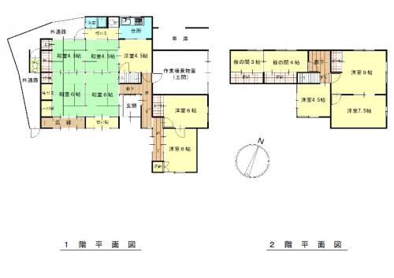

農村部エリア · 伊賀市島ヶ原（しまがはら）
島ヶ原駅まで900mの木造2階建て（昭和36年）
300万円

建物の状態
一部大幅な補修必要／浴室に雨漏りあり
伊賀流空き家バンクの調査より。
物件概要
- 所在地
- 伊賀市島ヶ原（しまがはら）
- エリア
- 農村部エリア
- 間取り
- 12K
- 構造
- 木造2階建て
- 建築年
- 昭和36年
- 土地面積
- 399.99㎡
- 延床面積
- 194.82㎡
- 水道
- 上水道
- 排水
- 公共下水道
- トイレ
- 水洗
- 風呂
- 灯油
- ガス
- プロパン
- 交通
- JR関西本線 島ヶ原駅 0.9km／三重交通 川南バス停 0.4km
- 学校
- 小学校 1.7km／中学校 1.7km
- 買い物
- スーパー 1km／コンビニ 4.1km
- その他
- 駐車場1台（軽自動車）
間取り図

場所
詳しい住所は利用者登録の後にお知らせします。地図は地区を示しています。